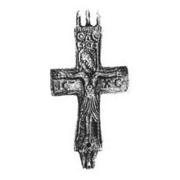
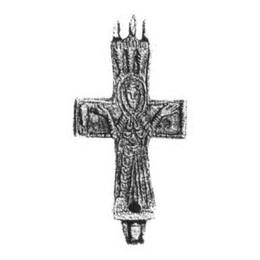

Catalog › CE-0222 · KOR2003-I.1.3
Encolpion cu capete dreptunghiulare, Orantă pe față, Răstignire cu soare și lună pe revers
sec. XI (1001–1100) · Veliki Novgorod, Rusia · Muzeul-rezervație Unit de Stat din Novgorod (NGOMZ), Veliki Novgorod, inv. КП 40530; А144-65 вх 1676 26
double-sided reliquary cross (enkolpion), aramă; c. XI (1001–1100); found at Veliki Novgorod, Rusia; kept at Muzeul-rezervație Unit de Stat din Novgorod (NGOMZ), Veliki Novgorod.




Identificare
- Categorie
- Encolpion bivalv (relicvar)
- Material
- Aramă
- Tehnică
- Turnare în relief
- Dimensiuni
- Î 43 × L 27 × Gr 5 mm
Iconografie
- Avers
- Maica Domnului Orantă
- Descriere avers
- Pe valva de față imaginea în picioare, evident a Maicii Domnului în poziția Orantei; deasupra capului ei o compoziție din trei spice (?) stilizate care formează o coroană; încă un spic (sau copac?) este reprezentat lângă mâna dreaptă a Maicii Domnului. Imaginile sunt în relief jos, uscat, la nivelul bordurilor joase care încadrează encolpionul.
- Revers
- Răstignirea (Hristos cu perizoma)
- Descriere revers
- Pe valva de revers Răstignirea cu lemnul crucii evidențiat, tăbliță și suppedaneum, cu soarele și luna abia schițate. Hristos în perizoma, cu capul înclinat spre umărul drept, brațele aproape drepte, cu stigmate pe palme. Inscripția sub mâinile lui Hristos este adâncită (posibil turnată odată cu crucea).
- Inscripții
- IC XC
- Limba
- Greacă
Datare și atribuire
- Datare
- sec. XI (1001–1100)
- Centru
- Necunoscut
- Tipologie
- Korzukhina–Peskova 2003, tip I 1
Descoperire
- Localitate
- Veliki Novgorod
- Țară
- Rusia
- Context
- Așezare
- Anul
- 1993
Păstrare și referințe
- Colecție
- Muzeul-rezervație Unit de Stat din Novgorod (NGOMZ), Veliki Novgorod
- Nr. inventar
- КП 40530; А144-65 вх 1676 26
- Bibliografie
- G. F. Korzukhina, A. A. Peskova, Древнерусские энколпионы. Нагрудные кресты-реликварии XI–XIII вв., Sankt-Petersburg, 2003 [Korzukhina–Peskova 2003], p. 45, cat. nr. I 1/3, reprodusă la Табл. 5 (planșe, p. 247). Bibliografie citată în sursă: Янин, Рыбина, Хорошев, Гайдуков, Сорокин 1994, 38.
- Figura
- Табл. 5
- Planșe
- Korzukhina–Peskova 2003, Табл. 5 (planșă fără paginație proprie în PDF; p. 247 tipărită)
- Observații
- Datare după Peskova: sec. XI. Circumstanțe: Săpături 1993, sectorul Troițki X. Dimensiuni: dimensiuni în stare închisă (grosime 0,5 cm). Găuri trecătoare de diametre diferite în partea de jos a ambelor valve. Lectura IC XC de verificat pe original (în tipar: IG XG). Coordonate: nu sunt date în sursă.
Citare: Corpus Encolpiorum, CE-0222, Encolpion cu capete dreptunghiulare, Orantă pe față, Răstignire cu soare și lună pe revers, https://vitaliejosanu1979-ux.github.io/primul-meu-proiect/piese/KOR2003-I.1.3/ (accesat 2026-10-17).